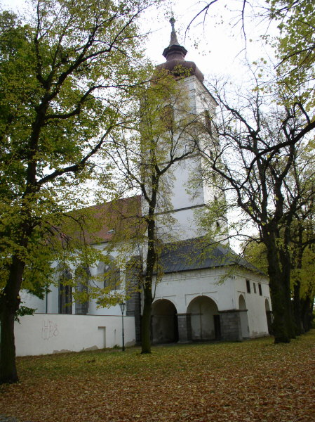
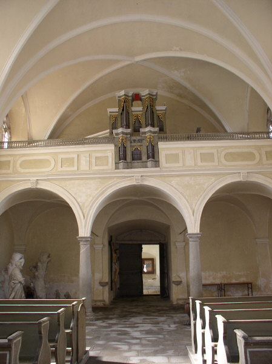
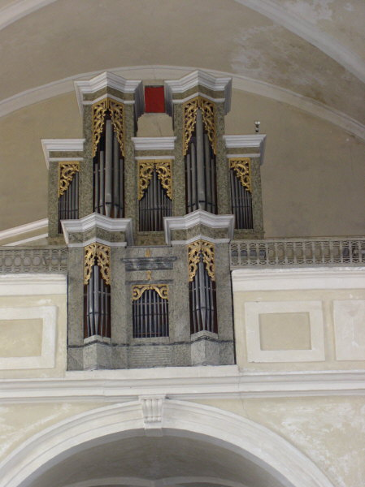
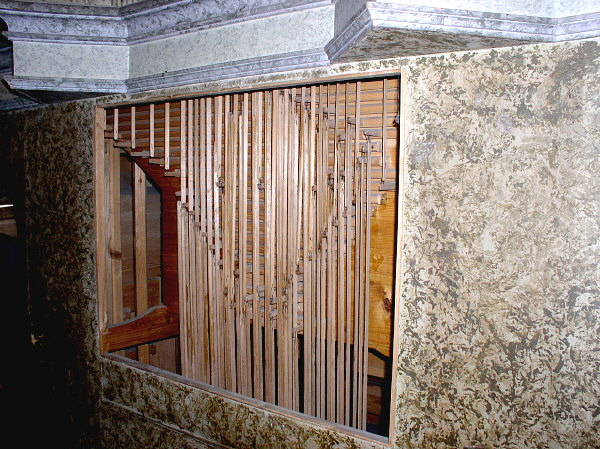
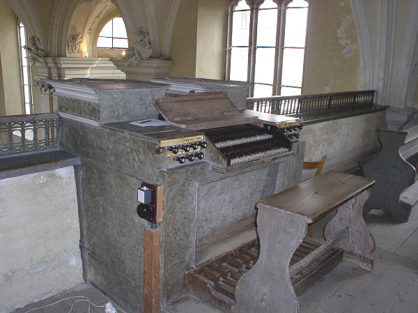
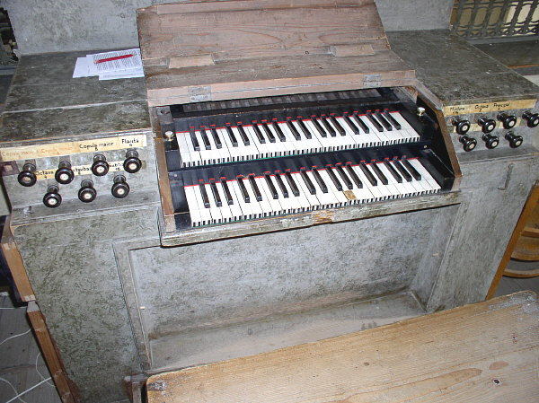
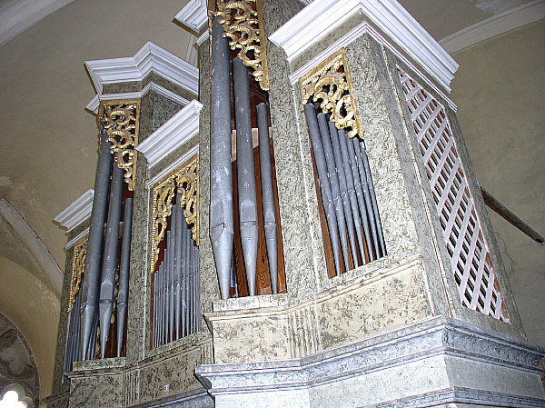
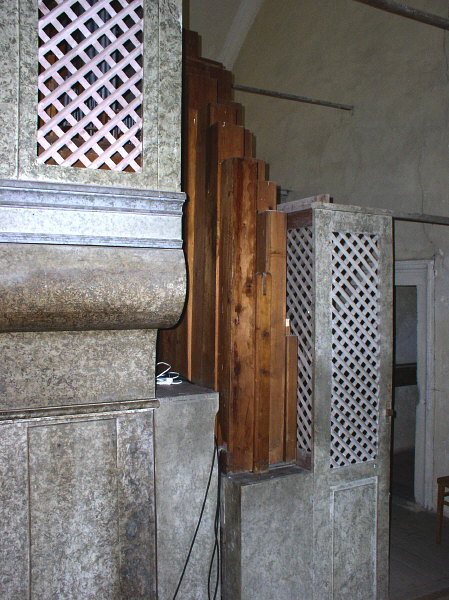
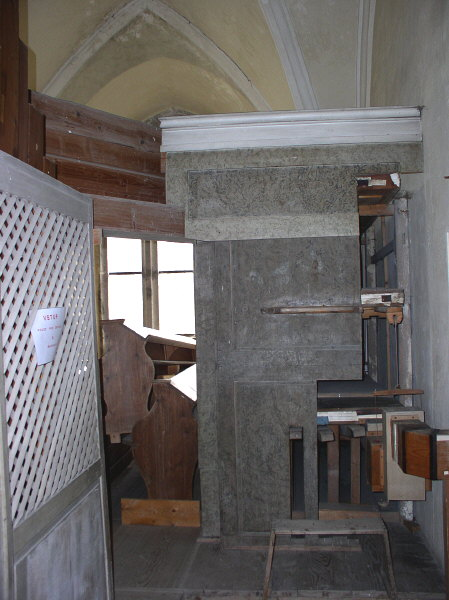

(Bedřich Semrád 1740)
Klášterní kostel v Brtnici vznikl roku 1629 přestavbou původní evangelické modlitebny sv. Matouše. Ta byla stavěna ještě v renesančních formách s gotickými prvky (Hynek Brtnický z Valdštejna kolem roku 1588). Přestavbu modlitebny započal na popud rodu Collaltů významný vídeňský architekt G. B. Pieroni roku 1629, který přistavěl boční kaple a věž. Stavba byla dokončena roku 1641 zasvěcením kostela Nanebevzetí Panny Marie, čímž byl potvrzen tehdejší rekatolizační akt. Se zrušením kláštera roku 1784 byl zrušen i kostel. V roce 1831 byl kostel opětovně obnoven a zasvěcen blahoslavené Juliáně z rodu Collalto. Počátkem 20. stol. byl barokní oltář v kostele nahrazen oltářem secesním. |
Varhany
se nacházejí ve středu prostorného hudebního kůru na západní straně kostela.
Jejich původ je odhadován na čtyřicátá léta 18. století a podle způsobu
zdobení prospektových píšťal a provedení dalších prvků jsou připisovány
Bedřichu Semrádovi. Tato skutečnost není s jistotou ověřitelná, každopádně
tyto varhany stavěl skutečný mistr, o čemž svědčí nejen jejich dokonalé
řemeslné provedení, ale především jejich nádherný a vyvážený zvuk. Ve
varhanách je záznam o opravách (kolem roku 1890 - Josef Votruba, varhanář
a stavitel varhan v nedalekém farním kostele sv.
Jakuba Většího). |

Nástroj má dva manuály a pedál a je rozdělen na pozitiv, vestavěný v zábradlí kůru, hlavní stroj a pedálový stroj. Dispozice: |
| Hlavní stroj: | Pozitiv: | Pedál: | |||||
| Copula | 8' | Copula maior | 8' | Subbas | 16' | ||
| Gamba | 8' | Copula minor | 4' | Oktavbas | 8' | ||
| Principal | 4' | Principal | 2' | Oktáva | 4' | ||
| Flétna | 4' | Oktáva | 1' | ||||
| Kvinta | 22/3' | ||||||
| Oktáva | 2' | ||||||
| Mixtura | 2' 3x |
V
manuálech je velká oktáva řešena jako krátká, pedál je naproti tomu chromatický
(pravděpodobně dodatečně zchromatizovaný). Vzdušnice jsou zásuvkové, traktura
mechanická, celodřevěná s kondukty pod podlážkou pod lavicí varhaníka
a hřídelovou deskou pod prospektem hlavního stroje a pod pedálovým strojem. |

Hrací stůl je součástí pozitivu v zábradlí, hlavní
stroj je od něj poměrně vzdálený. Registratura je ovládána v té době standardním
způsobem - pomocí manubrií po stranách hracího stolu. Popisy manubrií
- rejstříků jsou řešeny nalepenými papírovými (dříve asi pergamenovými)
štítky s barevně odlišenými nápisy (tuší). Klávesy manuálu jsou zdobeny
vyřezávaním a mají původní kostěný potah. Pedál je rovnoběžný, německého
typu. |

Detail manuálů a rejstříkových manubrií. |

Cínové píšťaly v prospektech mají charakteristické zdobení. Hlavní stroj je cca 2 m za hracím stolem, pedálový stroj pak stojí vzadu za ním.Dřevěné píšťaly krytého Subbasu 16' stojí volně mezi skříněmi. Vzduchové hospodářství nástroje je poměrně rozsáhlé. V samostatné místnosti ve věži je zásobní měch s ventilátorem, na boční straně kůru pak soustava měchů se šlapadly. Vzduchovody k jednotlivým strojům pak vedou pod podlahou i volně ve výšce. |
Tento památný barokní nástroj je pozoruhodný nejen svou historií a vynikajícím zvukem, ale také poměrně dobrým stavem, v jakém se dochoval přes více než dvě a půl století svého života. Pokud bude v budoucnu citlivě zrestaurován, bude dále ukázkou mistrovství a profesionality našich předků. Chcete-li se pokochat zvukem těchto varhan, najdete jej na gramofonové nahrávce "České a moravské barokní varhany III.", vydal Supraphon pro gramofonový klub v roce 1977 (hraje prof. Reinberger). |
Na dalších stránkách naleznete malou reportáž z průběhu stavby, popis, úvod a dispozici varhan v nedalekém farním kostele sv. Jakuba Většího v Brtnici. ©2005 - Ing. Petr Bernat. |